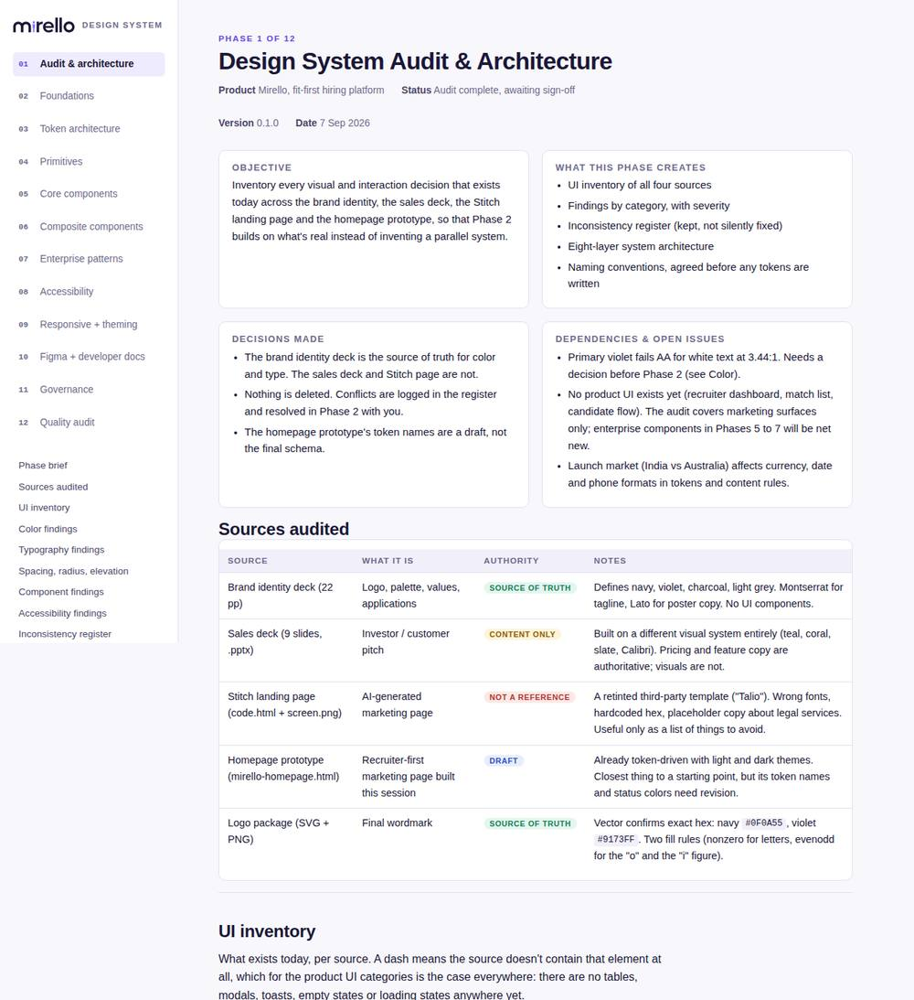
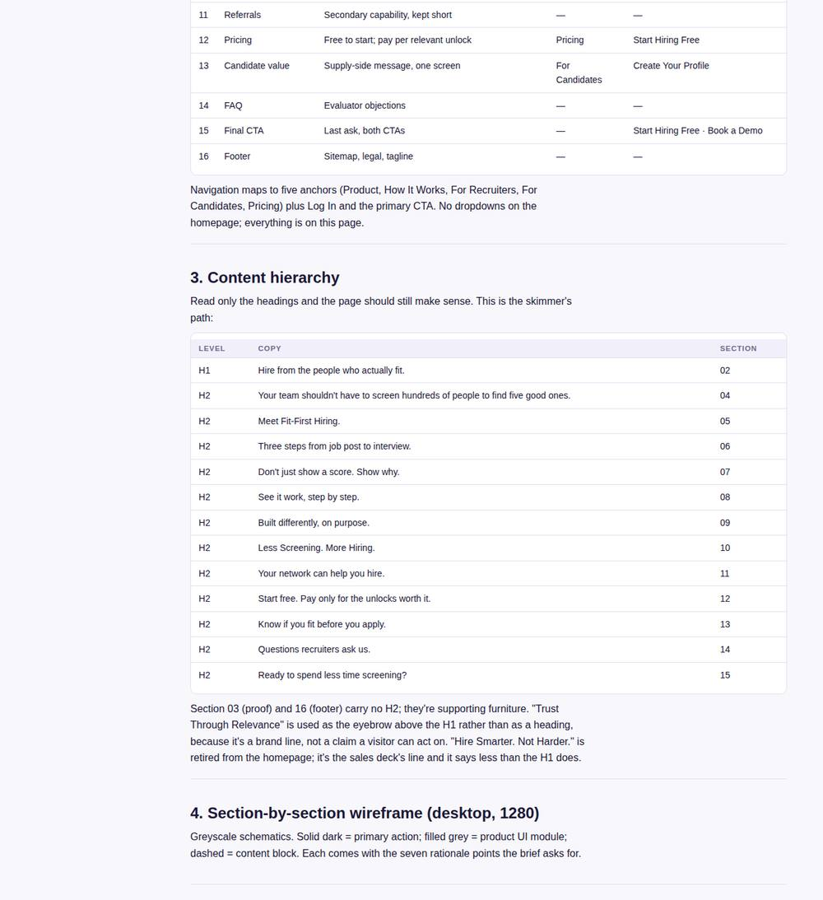
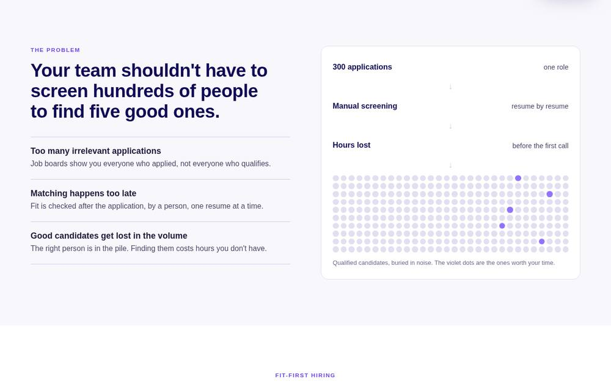
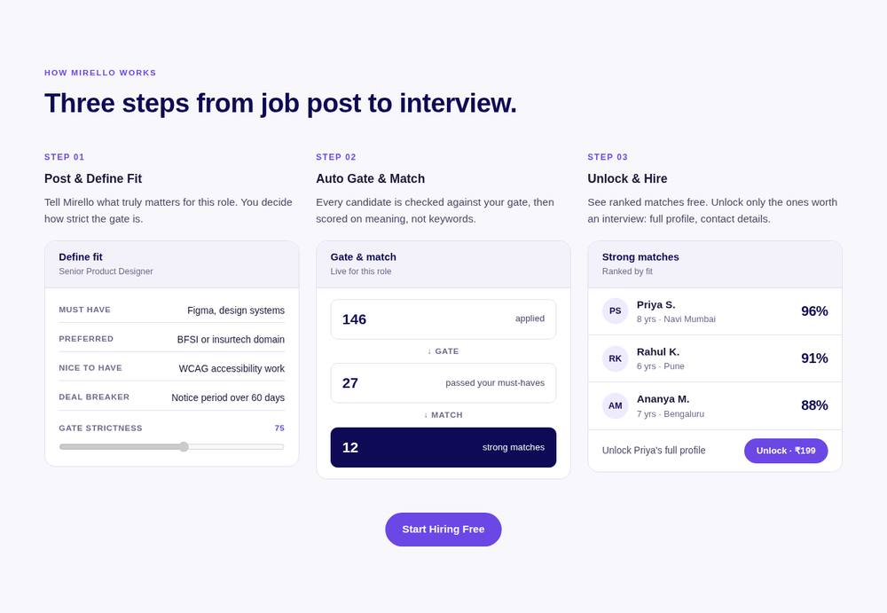
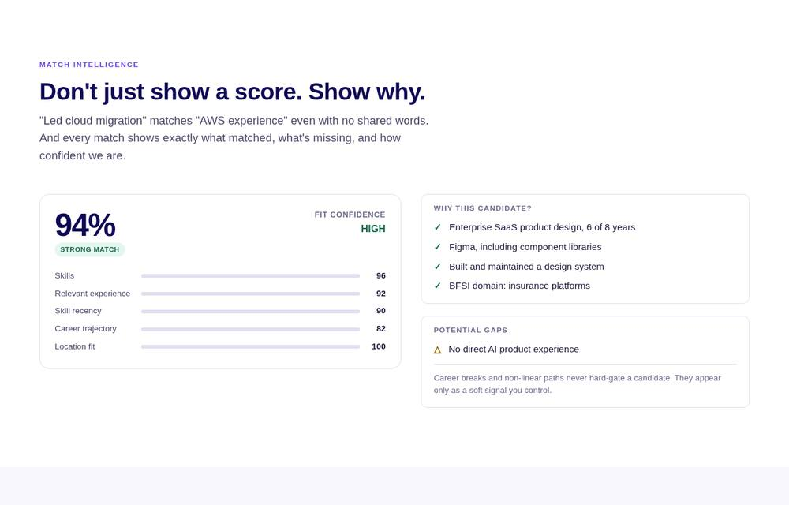
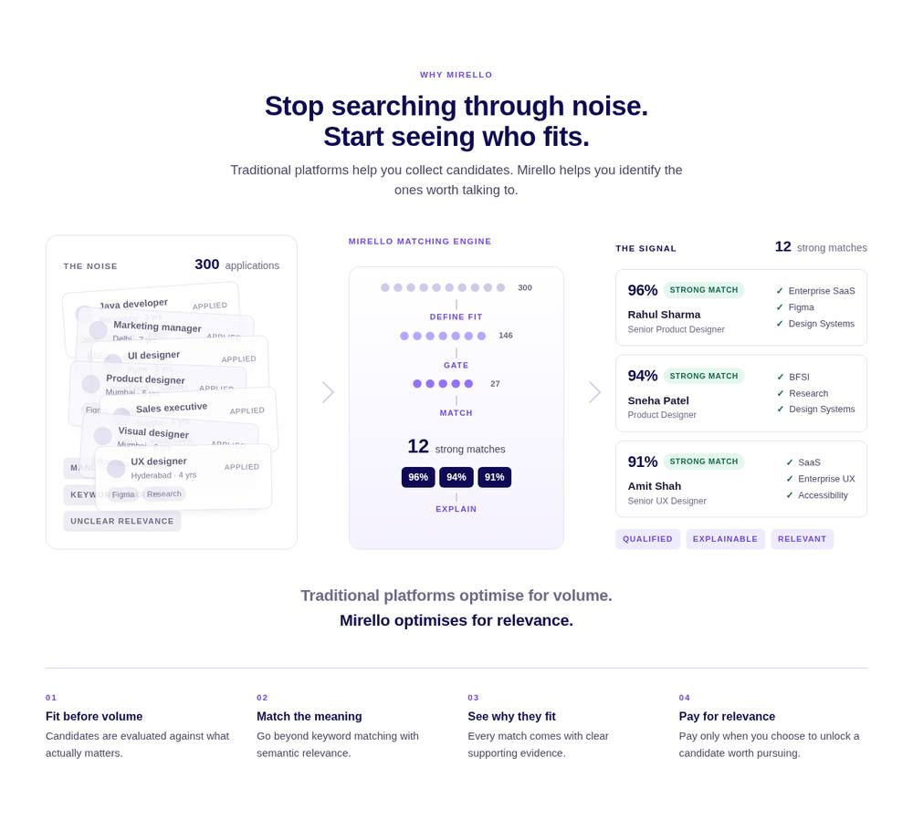
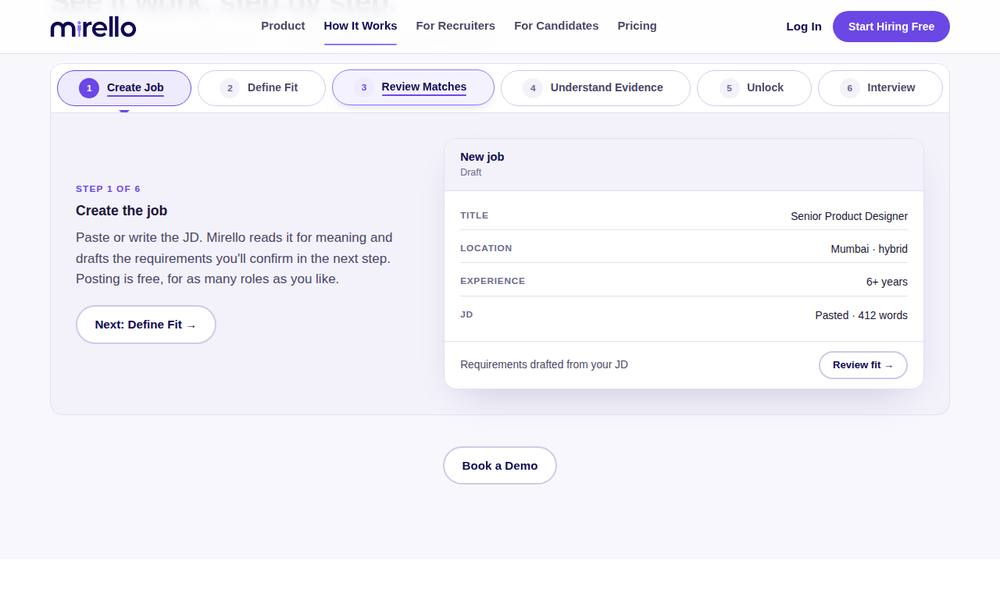
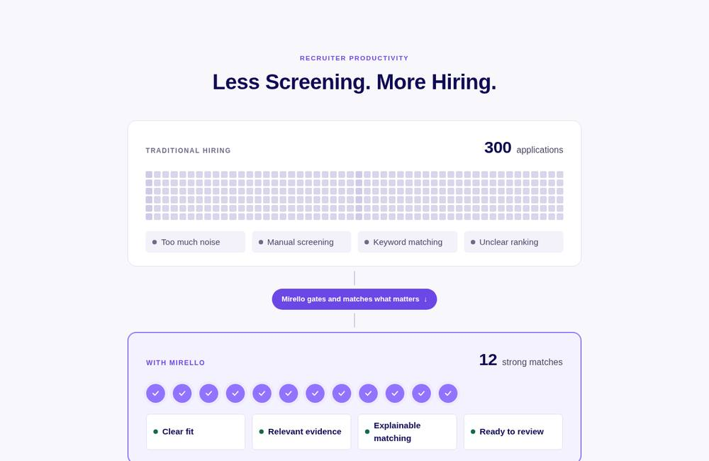
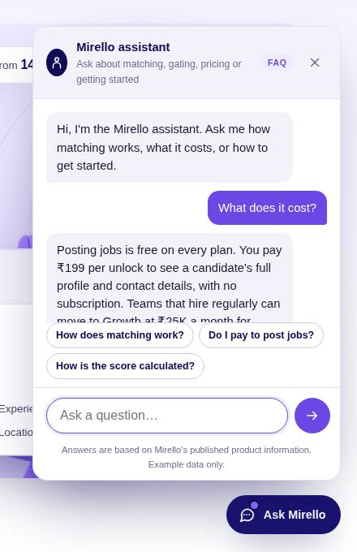

Proof of concept · 2026
Designing Mirello, a fit-first hiring platform, from brand deck to live demo.
A proof-of-concept engagement: how a startup with two decks and an idea became a positioned product story, a design-system foundation, and a fully built, accessible marketing site with a working demo — in one focused sprint.


Summary
Mission
Mirello's founders had a clear thesis: most hiring platforms sell volume, and recruiters drown in it. Mirello would gate and match candidates before they apply, explain every score, and charge only for the candidates a recruiter chooses to unlock. What they had was a brand deck, a sales deck and an AI-generated landing page — three artefacts with three different visual identities. What they didn't have was a product story a recruiter could understand in five seconds, or a foundation a team could build on.
My contributions
I ran this as a proof of concept, end to end and solo — with Claude AI as my working partner throughout: platform strategy and a competitive map of eight Indian hiring platforms; a design-system audit and architecture; UX strategy, information architecture and wireframes for a 16-section homepage; the high-fidelity desktop build and responsive adaptation; and an accessibility audit before shipping a public demo the founders could share the same day. Every stage produced a decision the next one depended on — strategy first, pixels last.
Impact
Because this is a POC and not a live commercial product, there are no traffic or revenue numbers to report — and I'd rather not invent any. What the sprint did produce is measurable in its own terms:
Strategy first, pixels last.
I resisted the urge to open Figma. Each stage produced a decision the next one depended on.
Platform strategy and competitive map
Read the decks for what they committed the product to: pre-apply gating, semantic matching with an explainable breakdown, pay-per-unlock, referrals. Mapped the landscape in four tiers — volume incumbents, curated tech platforms, ATS tools that would absorb "AI matching" as a feature, and the agencies whose 8–20% fees the ₹199 unlock quietly undercuts. Key insight: matching would become a commodity. The defensible layer was marketplace behaviour and the pricing model.
Design-system audit
Inventoried all four sources across 16 element categories. The sales deck ran on an unrelated teal-and-coral palette. The AI landing page was a retinted template with 14 hardcoded hex values, no form labels and no focus states. The finding that mattered: white text on the brand violet #9173FF measured 3.44:1, failing WCAG AA on every primary button in every source.
UX strategy, IA and wireframe
Built the page around one principle — signal over volume — and a trust ladder: is this just another job board? does the matching actually work? what does it cost to find out? Sixteen sections answer those three doubts in that order. Every heading was written before any layout, so the page still makes sense to someone who reads only headlines.
High-fidelity build, then responsive
Built the desktop page directly in HTML and CSS on the token foundation, iterated on the sections that carried the most weight, then adapted for 768 and 390 without shrinking the desktop layout.
Audit, harden, ship
Ran axe-core at desktop and mobile widths, keyboard-walked the page, fixed what came up, added SEO structure, and deployed to a public bucket so the founders could share it the same day.
Eight Indian platforms, one gap.
I didn't want Mirello to be another Naukri or LinkedIn clone. So before designing anything I looked at what each platform actually sells recruiters, and where Mirello could be meaningfully different rather than marginally better.
What the landscape told me. Every platform optimises for more: more applications, more profiles, bigger databases, more filters. Nobody tells the candidate why they didn't fit, and nobody shows the recruiter the evidence behind a score. That became the positioning I recommended over "another AI recruitment platform": the hiring platform that shows you who is actually worth interviewing. Or shorter — hire from signal, not volume.
Five product principles that came out of it
- Don't show recruiters 500 candidates. Show "12 candidates worth your time." The first screen answers "who should I interview and why?"
- Make the score explainable. Skills, experience, recency, trajectory, location — each visible, plus a plain-language "why this candidate".
- Let the recruiter define fit. Must-have, strong preference, nice-to-have, deal-breakers, and a strictness slider from flexible to strict.
- Candidate evidence, not candidate cards. Matched criteria, gaps, a quoted proof point, availability, expected compensation, fit confidence.
- Design around decisions, not features. JD → match → evidence → decision, without ten screens in between.
Who we were designing for.
There was no budget or time for primary interviews in a one-sprint POC, so I built proto-personas from three sources and treated them as hypotheses to validate, not facts. They were still enough to settle every argument about what goes above the fold.
The founders' decks
Sales and brand decks encode who the founders had already spoken to: TA leads drowning in volume, and the ₹199 unlock priced against agency fees. I read them as field notes.
Eight competitor teardowns
What each platform sells, what its reviews complain about, and which recruiter jobs-to-be-done nobody serves — the "why didn't I fit?" question on the candidate side above all.
Domain experience
Eighteen years inside BFSI and enterprise SaaS teams, on both sides of hiring, plus the recruiters I've sat next to through PI planning. Not a substitute for research; a good place to start it.
- 01Volume is the problem, not a feature. Every incumbent sells "more candidates". A TA lead's real question is "who should I interview today?"
- 02Scores without reasons don't earn trust. Recruiters have been burned by keyword matching. A number they can't explain to a hiring manager is worthless.
- 03Candidates want feedback more than reach. Applying into silence is the single most-cited complaint in candidate reviews across the platforms studied.
- 04Pricing has to feel like buying evidence, not a subscription. Pay only when you unlock someone worth talking to — the model the decks committed to, and the one that undercuts agencies.
Three proto-personas
Rhea — TA Lead, mid-size SaaS
Primary · hires 6–10 roles a quarter, no dedicated sourcerGoals
- Fill roles without screening 300 CVs each
- Defend a shortlist to a hiring manager in one line
- Cut agency spend
Pains
- Naukri inbox is 80% irrelevant
- "AI match" scores she can't explain
- Pays for database access she barely uses
"Don't show me 500 people. Show me the 12 and tell me why."
Designed the homepage for herArjun — Hiring manager, engineering
Secondary · approves shortlists, never logs into the ATSGoals
- Spend interview time only on real fits
- See evidence, not adjectives
- Set must-haves once and trust the gate
Pains
- Gets candidates who miss the one non-negotiable
- Recruiters can't tell him why someone was picked
"If it says 94%, I want to see the four things that made it 94."
Drove the evidence viewPriya — Senior product designer, job-seeking
Candidate · 8 yrs, insurtech, applies selectivelyGoals
- Apply only where she has a real shot
- Know why she didn't fit, and what to fix
- Not be judged on keywords
Pains
- Applications vanish into silence
- "Lead cloud migration" doesn't match "AWS" on keyword platforms
- Career break auto-rejected by filters
"Tell me no before I spend an hour on the form."
Shaped the pre-apply fit checkPriya is the candidate shown in the homepage hero — the persona and the product screen were designed together so the demo tells one consistent story.
Three flows, one gate.
The whole product turns on one moment: fit is checked before a candidate lands in a recruiter's inbox. Every flow passes through that gate, which is why the homepage could explain the product in a single diagram.
Recruiter — from job post to hiring decision
Define fit once, let the system gate and score, review only the strong matches, pay per unlock. The loop back lets a recruiter loosen or tighten strictness without re-posting.
Candidate — fit check before the form
A candidate sees whether they clear the gate before investing in an application. A miss returns a reason and what would change it, which is the feedback the incumbents never give.
Referral — the same gate, with a bounty
Referrals don't bypass fit. A referred candidate goes through the identical check, so the shortlist stays clean and the referrer is paid only on a hire.
What the flows decided. Because every path converges on the gate, the homepage's "How Mirello works" section shows exactly three screens — Post & Define Fit, Auto-Gate & Match, Review & Unlock — and the pricing appears inside the third one. The flows are also why "Define fit" got the strictness slider: it's the only control a recruiter needs to change outcomes without starting over.
Two documents the team can keep using.


Where the design earned its keep.
Keep the brand violet, add an action violet
Rather than abandon #9173FF or switch buttons to navy, I introduced #6B47E6 for actions, links and focus rings. One hex value, brand intact, every button passes AA at 5.72:1.
The product is the proof
No generic HR stock photo. The hero shows a real match view — 146 applications → 27 qualified → 12 strong — with the top candidate's score breakdown. "Less screening, more relevant" without an adjective.
Show why, not just a score
The match-intelligence section became the largest product module on the page: five-dimension breakdown, matched evidence in the recruiter's own words, gaps, and a fit-confidence label. It exists to kill the black-box objection.
No fake proof
No customer logos, no testimonials, no "70% fewer applications" until sourced. Placeholders are labelled as placeholders — the same rule this case study follows.
Montserrat above 16px, Lato at and below
Montserrat is wide and eats horizontal space in tables and forms. So it carries display and headings only; buttons, table cells and body sit in Lato.
No dark bands
The founders asked for light backgrounds throughout. Navy became type and two small emphasised surfaces; sections alternate between off-white and a pale violet tint.
Sixteen sections, one question.
Every section answers a specific recruiter doubt. A few of the ones that carried the most weight:






How I used Claude on this project.
This sprint was my first end-to-end build with Claude as a working partner rather than a chat window. I set the direction, made the calls and reviewed everything; Claude did the heavy lifting between decisions. The rule I kept: AI drafts, I decide.
Strategy and research, faster
I fed Claude the brand deck and sales deck and had it pull out every commitment the product had already made — gating, explainable matching, pay-per-unlock. Then I used it to map eight Indian hiring platforms against those commitments. I checked each claim, cut what was wrong, and wrote the positioning myself. Days of desk research became an afternoon.
The design-system audit and register
Claude inventoried the four sources across sixteen element categories and ran the WCAG contrast maths on nine colour pairs — which is how the 3.44:1 failure on the brand violet surfaced early instead of after the first build. The inconsistency register, layer architecture and naming conventions were drafted with Claude and edited by me, so the founders got a document, not a slide.
From wireframe to hi-fi in code, not Figma
I wrote the sixteen section headings and the rationale for each; Claude built the greyscale wireframe as HTML, then the high-fidelity desktop page on the token foundation, then the 768 and 390 adaptations. Every iteration was a conversation — "the productivity section reads as two identical lists, try the founders' sketch" — and the change came back in minutes. That's why the deliverable is a live demo, not a static mockup.
Audit, harden, ship
Claude scripted the axe-core runs at both viewports, the keyboard walk and the target-size check, and fixed the two real issues it found in the same session. It also generated the SEO structure, the og-image and the deployment — the founders had a shareable link the same day.
An assistant inside the product
The demo site carries an "Ask Mirello" panel — a Claude-powered assistant grounded only in the page's own product facts, with an FAQ fallback when no AI runtime is available. It lets a sceptical recruiter ask "what does this cost?" and get the pricing answer without hunting for it — and it let the founders see what an AI-native feature could feel like in their product.

What it changed. The strategy, the audit, the build and the accessibility pass usually happen in four separate handoffs with four separate tools. With Claude in the loop they happened in one sprint, in one place, with the decisions documented as they were made. What it didn't change: someone still has to know what good looks like, spot the wrong call, and say no. That was my job.
Have a product that needs this kind of thinking?
Strategy, design system and a shippable build — in one sprint.